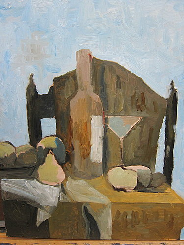
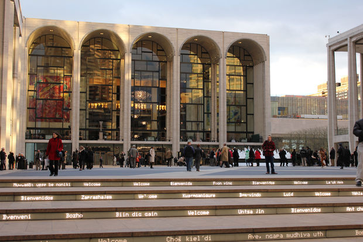

More Images I'm from Taiwan, which looks like a sweet potato. I am low key wanting to become a veterinarian. I want to get started after completing my current degree, but I have not yet figure out exactly what I need in order to pursue a degree in becomine one.

Having my dad's painting as an example: I've been trying to get muted colors on my painting the past couple of months. Got introduced to Zelda before summer. The production of the game is just beautiful. p.s. fought the boss successfully (over prepared) yesterday, 9/8/2018.

Met Opera is super convenient for me since I live around school. I truly appreciate the fact that high quality operas is affordable.